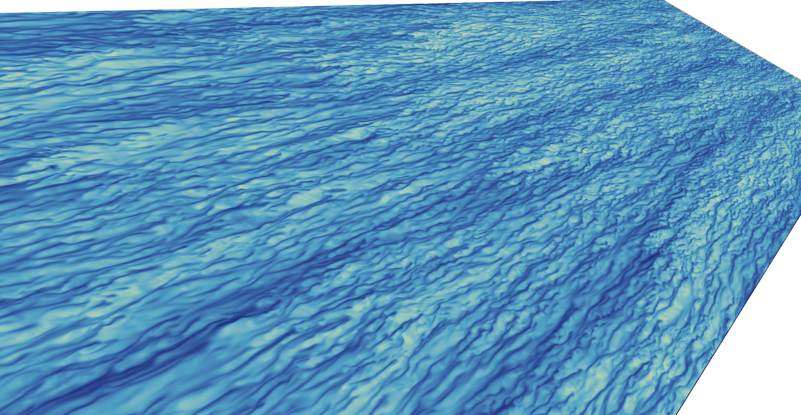
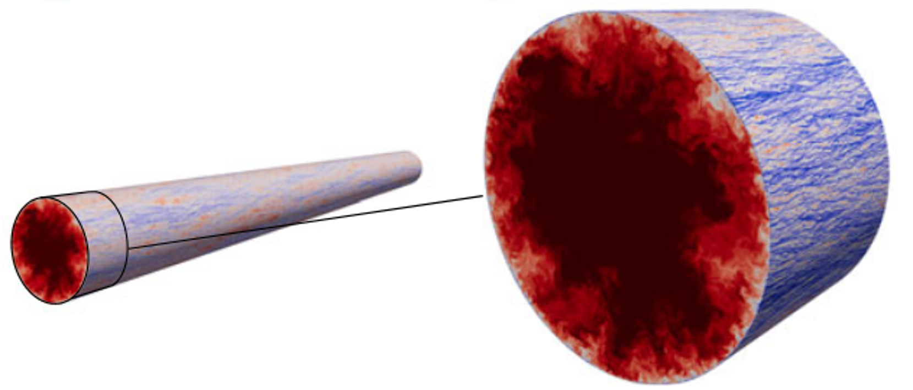

Prof. Jie Yao
LeaderExpert in vortex dynamics, turbulence, flow control, and high-performance computing.
jieyao@outlook.comOpen turbulence data for open science. We are a global community building high-quality, open-access datasets to advance turbulence research.
We are united by a common goal: to make high-quality turbulence data openly accessible and to empower the next generation of scientific discoveries.
From academia
and industry
Across institutions
and disciplines
For a more
reproducible future
Open data accelerates discovery, fosters collaboration, and builds a stronger scientific community.
— Open Turbulence Database
High-fidelity DNS dataset

Canonical turbulence flow

Wide range of Reynolds numbers